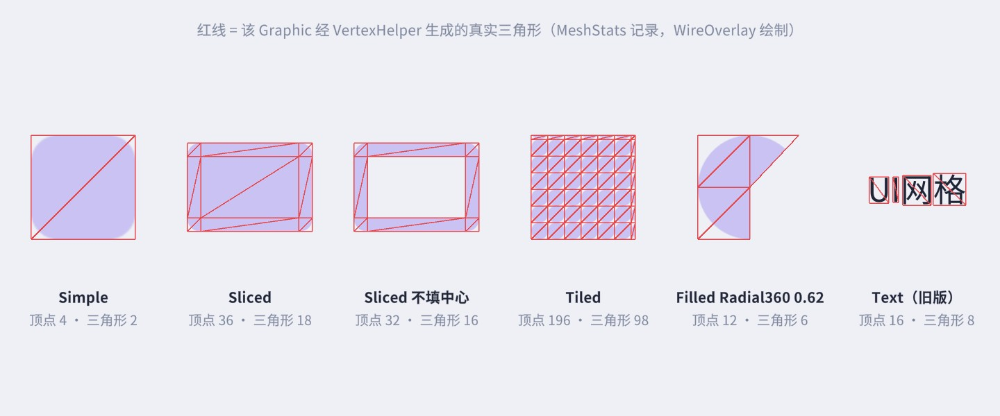
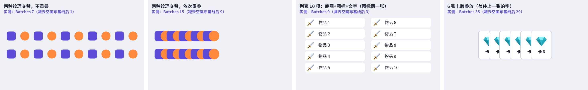
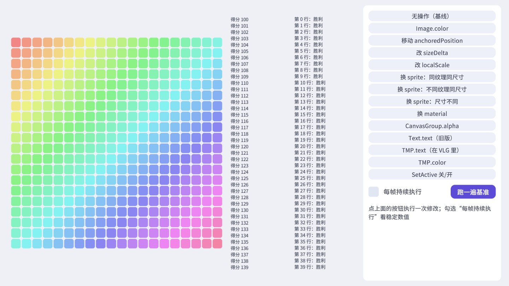

改一个颜色、换一张图、挪一下位置，UGUI 在背后分别干了多少活？本章沿着 Graphic → CanvasUpdateRegistry → CanvasRenderer → Canvas 这条链路读源码，把“标脏—重建—合批”讲清楚；然后在配套工程里搭两个实验台，实测每种修改触发哪种重建、花多少时间，以及哪些摆法会打断合批。本章所有数字都来自作者机器上的实测。
屏幕上每一个能看见的 UGUI 元素，都是 Graphic 的子类。Graphic 是一个抽象的 MonoBehaviour，它负责三件事：知道自己属于哪个 Canvas、生成网格和材质、在需要时把自己登记到重建队列。它的直接子类 MaskableGraphic 增加了“能被遮罩”的能力，Image、RawImage、Text 以及 TextMeshPro 的 TextMeshProUGUI 都继承自 MaskableGraphic。
CanvasRenderer 是这条链路上唯一的原生（C++）组件。Graphic 在 C# 里算好网格和材质，通过 canvasRenderer.SetMesh / SetMaterial / SetTexture / SetColor 交给它；之后的合批、排序、提交绘制全部发生在原生层的 Canvas 里，C# 看不到。理解这条分界线很重要：C# 层的开销叫“重建”（Rebuild），原生层的开销叫“合批”（Batch），两者的触发条件完全不同。
Image 和 Text 的类声明上都写着 [RequireComponent(typeof(CanvasRenderer))]，而 Graphic 基类只要求 RectTransform。Graphic 的 canvasRenderer 属性在找不到组件时会尝试 AddComponent，但在编辑器里 GetComponent 返回的是一个“假 null”对象，判断 ReferenceEquals(..., null) 为假，于是不会自动添加。作者在写本章的线框图组件时真踩到了：用 AddComponent 把自定义 Graphic 加到空物体上，重建时抛出 MissingComponentException。自定义 Graphic 一定要自己加 [RequireComponent(typeof(CanvasRenderer))]。
Graphic 从启用到销毁，会在两个全局注册表里进进出出。OnEnable 时，它先找到自己所属的 Canvas（沿父链找第一个启用的 Canvas，结果缓存在 m_Canvas 里），然后调用 GraphicRegistry.RegisterGraphicForCanvas 把自己登记到“这个 Canvas 的图形列表”里；如果开着 Raycast Target，还会登记到“这个 Canvas 的可射线图形列表”——第 11 章的 GraphicRaycaster 遍历的就是后者。登记完调用 SetAllDirty，于是刚启用的图形在本帧末尾一定会完整重建一次。
// 摘自 Graphic.cs
protected override void OnEnable()
{
base.OnEnable();
CacheCanvas();
GraphicRegistry.RegisterGraphicForCanvas(canvas, this);
#if UNITY_EDITOR
GraphicRebuildTracker.TrackGraphic(this);
#endif
if (s_WhiteTexture == null)
s_WhiteTexture = Texture2D.whiteTexture;
SetAllDirty();
}
OnDisable 时从图形列表中“禁用”自己、从重建队列里移除、清空 CanvasRenderer（原生层不再绘制它）、并标记布局重建（它不再占位置了）。换父物体时（OnTransformParentChanged）和 Canvas 层级变化时（OnCanvasHierarchyChanged，比如在中间插了一个子 Canvas），它会重新查找所属 Canvas、更新注册表、SetAllDirty。所以频繁改父物体也是一种昂贵操作：对象池回收时把元素挪到另一个父物体下，和 SetActive 一样会触发完整重建，第 18 章的循环列表因此尽量只改位置、不换父物体。
编辑器下还有一个 GraphicRebuildTracker：当字体纹理等资源被重新导入时，它负责让所有图形重新生成，这只影响编辑器，不进发布版本。
Graphic 不会每帧重建。它维护两个标记 m_VertsDirty、m_MaterialDirty，只有被“标脏”时才登记到重建队列。标脏的入口是三个虚方法：
// 摘自 com.unity.ugui 1.0.0 Runtime/UI/Core/Graphic.cs
public virtual void SetLayoutDirty()
{
if (!IsActive())
return;
LayoutRebuilder.MarkLayoutForRebuild(rectTransform);
if (m_OnDirtyLayoutCallback != null)
m_OnDirtyLayoutCallback();
}
public virtual void SetVerticesDirty()
{
if (!IsActive())
return;
m_VertsDirty = true;
CanvasUpdateRegistry.RegisterCanvasElementForGraphicRebuild(this);
if (m_OnDirtyVertsCallback != null)
m_OnDirtyVertsCallback();
}
public virtual void SetMaterialDirty()
{
if (!IsActive())
return;
m_MaterialDirty = true;
CanvasUpdateRegistry.RegisterCanvasElementForGraphicRebuild(this);
if (m_OnDirtyMaterialCallback != null)
m_OnDirtyMaterialCallback();
}
三者的去向不同：布局脏交给第 10 章的 LayoutRebuilder（向上找布局根，可能什么都不排）；顶点脏和材质脏都把 Graphic 自己登记进图形重建队列，区别只在设置哪个标记。SetAllDirty 三个都调（OnEnable、OnValidate、换父物体时）。末尾那三个回调 m_OnDirty*Callback 可以通过公开方法 RegisterDirtyLayoutCallback 等注册——这是一个官方留的“钩子”，本章的实验就是靠它在不改任何源码的情况下统计标脏次数的。
常见属性分别会标哪种脏，读各个 setter 就知道。几个有代表性的：
// Graphic.cs：颜色只影响顶点色
public virtual Color color { get { return m_Color; } set { if (SetPropertyUtility.SetColor(ref m_Color, value)) SetVerticesDirty(); } }
// Graphic.cs：RectTransform 尺寸变化
protected override void OnRectTransformDimensionsChange()
{
if (gameObject.activeInHierarchy)
{
// prevent double dirtying...
if (CanvasUpdateRegistry.IsRebuildingLayout())
SetVerticesDirty();
else
{
SetVerticesDirty();
SetLayoutDirty();
}
}
}
// Image.cs：换 sprite 时的两个优化
m_SkipLayoutUpdate = m_Sprite.rect.size.Equals(value ? value.rect.size : Vector2.zero);
m_SkipMaterialUpdate = m_Sprite.texture == (value ? value.texture : null);
m_Sprite = value;
// ……
SetAllDirty();
// Text.cs：改文字
else if (m_Text != value)
{
m_Text = value;
SetVerticesDirty();
SetLayoutDirty();
}
Image 换 sprite 的两行特别值得一看：新旧 sprite 尺寸相同就跳过布局脏，纹理相同就跳过材质脏（SetAllDirty 里检查这两个标记）。所以“同一图集里、同样大小的帧动画”换 sprite 只标顶点脏，这是 UGUI 专门为序列帧做的优化。而 移动、旋转、缩放不会调用任何一个 SetXxxDirty——它们只改变 Transform，由原生层的 Canvas 在合批时处理。12.7 节的实测会逐条验证这些结论。
所有重建都集中在单例 CanvasUpdateRegistry 里调度。它在构造时把自己挂到 Canvas.willRenderCanvases 上——这是原生 Canvas 在“本帧要渲染画布之前”发出的回调（位于 PostLateUpdate 阶段，在所有 LateUpdate 之后；没有任何画布需要更新时不会触发）：
// 摘自 Runtime/UI/Core/CanvasUpdateRegistry.cs
private readonly IndexedSet<ICanvasElement> m_LayoutRebuildQueue = new IndexedSet<ICanvasElement>();
private readonly IndexedSet<ICanvasElement> m_GraphicRebuildQueue = new IndexedSet<ICanvasElement>();
protected CanvasUpdateRegistry()
{
Canvas.willRenderCanvases += PerformUpdate;
}
两个队列都是 IndexedSet（List + Dictionary，O(1) 去重和删除）。布局队列里放的是 LayoutRebuilder（每个布局根一个），图形队列里放的是 Graphic 本身。同一个元素一帧内登记多少次都只算一次。PerformUpdate 是整个 UGUI 每帧最核心的函数：
// 摘自 CanvasUpdateRegistry.cs（PerformUpdate，去掉了 Profiler 采样代码）
CleanInvalidItems();
m_PerformingLayoutUpdate = true;
m_LayoutRebuildQueue.Sort(s_SortLayoutFunction);
for (int i = 0; i <= (int)CanvasUpdate.PostLayout; i++)
{
for (int j = 0; j < m_LayoutRebuildQueue.Count; j++)
{
var rebuild = m_LayoutRebuildQueue[j];
try
{
if (ObjectValidForUpdate(rebuild))
rebuild.Rebuild((CanvasUpdate)i);
}
catch (Exception e)
{
Debug.LogException(e, rebuild.transform);
}
}
}
for (int i = 0; i < m_LayoutRebuildQueue.Count; ++i)
m_LayoutRebuildQueue[i].LayoutComplete();
m_LayoutRebuildQueue.Clear();
m_PerformingLayoutUpdate = false;
// now layout is complete do culling...
ClipperRegistry.instance.Cull();
m_PerformingGraphicUpdate = true;
for (var i = (int)CanvasUpdate.PreRender; i < (int)CanvasUpdate.MaxUpdateValue; i++)
{
for (var k = 0; k < m_GraphicRebuildQueue.Count; k++)
{
// ……try { element.Rebuild((CanvasUpdate)i); } catch ……
}
}
for (int i = 0; i < m_GraphicRebuildQueue.Count; ++i)
m_GraphicRebuildQueue[i].GraphicUpdateComplete();
m_GraphicRebuildQueue.Clear();
m_PerformingGraphicUpdate = false;
几个由这段代码推出的规则：
InternalRegisterCanvasElementForGraphicRebuild 发现 m_PerformingGraphicUpdate 为真时会打印错误“Trying to add ... for graphic rebuild while we are already inside a graphic rebuild loop”。在 OnPopulateMesh 里修改别的 Graphic 的属性就会触发它。能进入这两个队列的对象只需要实现 ICanvasElement：Rebuild(CanvasUpdate)、transform、LayoutComplete、GraphicUpdateComplete、IsDestroyed 五个成员。CanvasUpdate 枚举定义了五个阶段：Prelayout、Layout、PostLayout 属于布局队列，PreRender、LatePreRender 属于图形队列（MaxUpdateValue 只是循环上限）。除了 Graphic 和 LayoutRebuilder，UGUI 里实现了 ICanvasElement 的还有 ScrollRect（在 PostLayout 阶段根据最终的 Content 尺寸更新滚动条和位置）、Scrollbar、Slider、Toggle（编辑器下用于在 OnValidate 之后延迟刷新）、InputField 等。这给了我们一个扩展点：如果你的组件需要“在布局全部算完之后、渲染之前”做点事（比如根据最终尺寸摆放一个装饰物），可以实现 ICanvasElement，并用 CanvasUpdateRegistry.RegisterCanvasElementForLayoutRebuild 把自己登记进去，在 PostLayout 阶段处理——这比在 LateUpdate 里读尺寸可靠，因为 LateUpdate 时布局还没算。
第 10 章的“一帧延迟”在这里得到了最终解释：你在 Update 里改了文字，文字只是登记了队列；直到本帧末尾 willRenderCanvases 触发 PerformUpdate，布局才被计算。Canvas.ForceUpdateCanvases() 的作用就是立刻触发一次这个回调。
图形队列里的每个 Graphic 在 PreRender 阶段被调用 Rebuild：
// 摘自 Graphic.cs
public virtual void Rebuild(CanvasUpdate update)
{
if (canvasRenderer == null || canvasRenderer.cull)
return;
switch (update)
{
case CanvasUpdate.PreRender:
if (m_VertsDirty)
{
UpdateGeometry();
m_VertsDirty = false;
}
if (m_MaterialDirty)
{
UpdateMaterial();
m_MaterialDirty = false;
}
break;
}
}
注意第一行：被裁剪（cull）的图形直接返回，脏标记保留。ScrollRect 里滚出视口、被 RectMask2D 剔除的列表项，即使数据变了也不会生成网格，等它重新进入视口时（MaskableGraphic.OnCullingChanged 会重新登记）再补做。这是 RectMask2D 比 Mask 省的原因之一。
// 摘自 Graphic.cs（DoMeshGeneration）
private void DoMeshGeneration()
{
if (rectTransform != null && rectTransform.rect.width >= 0 && rectTransform.rect.height >= 0)
OnPopulateMesh(s_VertexHelper);
else
s_VertexHelper.Clear(); // clear the vertex helper so invalid graphics dont draw.
var components = ListPool<Component>.Get();
GetComponents(typeof(IMeshModifier), components);
for (var i = 0; i < components.Count; i++)
((IMeshModifier)components[i]).ModifyMesh(s_VertexHelper);
ListPool<Component>.Release(components);
s_VertexHelper.FillMesh(workerMesh);
canvasRenderer.SetMesh(workerMesh);
}
流程只有四步：子类在 OnPopulateMesh 里往 VertexHelper 写顶点和三角形 → 同物体上所有 IMeshModifier（Shadow、Outline、你的顶点特效）依次修改 → 写进一个所有 Graphic 共享的 workerMesh → 交给 CanvasRenderer。共享的 s_VertexHelper 和 workerMesh 意味着网格生成不产生 GC，但也意味着你不能在 OnPopulateMesh 之外持有它们。Graphic 基类默认 useLegacyMeshGeneration = true，走的是 Mesh 版本的旧流程（DoLegacyMeshGeneration），Image、RawImage、Text 都在构造函数里改成了 false；自己写 Graphic 时建议也改成 false。
VertexHelper 内部是一组 List：位置、颜色（Color32）、uv0~uv3、法线、切线和索引。AddVert 加顶点，AddTriangle 加三角形，AddUIVertexQuad 一次加一个四边形；UIVertex 是一个顶点所有属性的结构体，PopulateUIVertex / SetUIVertex 用于读改单个顶点，GetUIVertexStream 把共享顶点展开成三角形列表（每 3 个一组），Shadow/Outline 这类效果就是基于展开后的列表复制顶点。FillMesh 里有一个硬限制：顶点数达到 65000 会抛异常——一个 Text 写入超长文字时会遇到。
Additional Shader Channels 这一项经常被忽略：自定义 UI Shader 读不到 uv1 的数据、法线全是默认值，多半是 Canvas 上没勾对应的通道。多传一个通道意味着每个顶点多占一份内存和带宽，所以只勾真正需要的。
每种 Image 到底生成了什么网格？在配套工程里写一个只“旁观”的 IMeshModifier，把最终三角形记下来，再用一个自定义 Graphic 画成线框：

从图里能读出不少实用信息：Sliced 是 9 个独立四边形（36 个顶点，不共享顶点）；Tiled 的顶点数随平铺次数增长，铺一张很小的图在很大的区域上，顶点数会非常可观（UGUI 对 Tiled 有上限保护，超过时会改变平铺方式，以实际版本为准）；旧版 Text 每个字符 4 个顶点。TextMeshPro 不走 Graphic 的 DoMeshGeneration，它自己生成网格并直接调用 canvasRenderer.SetMesh，所以 IMeshModifier 对 TMP 无效——TMP 的顶点特效要用它自己的 API（第 13 章）。
图 12-3 的红色线框本身就是一个自定义 Graphic，它的 OnPopulateMesh 很短：读出 MeshStats 记下的三角形，把每条边画成一个细长的四边形。
这段代码体现了写自定义 Graphic 的几个基本功：第一行 vh.Clear() 不能省，VertexHelper 是所有 Graphic 共享的，里面可能残留着上一个图形的数据；顶点坐标是本物体 RectTransform 的本地坐标（pivot 为原点），所以要用 TransformPoint / InverseTransformPoint 在不同物体之间换算；顶点色用 Graphic 的 color（Color32），这样 Inspector 里改颜色、CanvasGroup 淡出、Selectable 的颜色过渡都能自然生效；索引是相对于整个 VertexHelper 的，加四边形前先记下 currentVertCount。另外要注意，WireOverlay 的线框依赖另一个物体的网格数据，而 Graphic 只在自己被标脏时才重建——源数据变了，要有人调用 WireOverlay 的 SetVerticesDirty（配图代码里在截图前手动调用了一次）。圆角矩形、扇形进度、雷达图等更完整的例子在第 13 章。
// 摘自 Graphic.cs
protected virtual void UpdateMaterial()
{
if (!IsActive())
return;
canvasRenderer.materialCount = 1;
canvasRenderer.SetMaterial(materialForRendering, 0);
canvasRenderer.SetTexture(mainTexture);
}
public virtual Material materialForRendering
{
get
{
var components = ListPool<IMaterialModifier>.Get();
GetComponents<IMaterialModifier>(components);
var currentMat = material;
for (var i = 0; i < components.Count; i++)
currentMat = (components[i] as IMaterialModifier).GetModifiedMaterial(currentMat);
ListPool<IMaterialModifier>.Release(components);
return currentMat;
}
}
material 没有指定时用 Canvas.GetDefaultCanvasMaterial()（UI/Default）。同物体上所有 IMaterialModifier 依次“加工”材质：MaskableGraphic 自己就是一个，它在父级有 Mask 时用 StencilMaterial.Add 生成带模板测试的材质（第 14 章）；Mask 组件也是一个，给遮罩图形生成写模板的材质。你也可以写自己的：
要点是：IMaterialModifier 自己的状态变了，要主动调用 graphic.SetMaterialDirty()，否则 Graphic 不知道需要重新取材质。纹理（mainTexture）和材质是分开设置的：Image 的 mainTexture 是 sprite 的纹理，所以“同一个材质、不同纹理”在合批时也算不同（12.6 节）。
TextMeshProUGUI 继承自 MaskableGraphic，接入的是同一套标脏与队列机制，但重写了关键方法。它的 SetVerticesDirty 只登记队列、不设 m_VertsDirty（真正的“是否需要重新生成”由 TMP 内部的 m_havePropertiesChanged 判断），并且在图形重建进行中时直接返回，避免触发前面提到的“重建中登记”错误；它的 SetLayoutDirty 额外把首选宽高的缓存标记为失效；它的 Rebuild 在 Prelayout 阶段处理“文本框自动适应大小”，在 PreRender 阶段调用 OnPreRenderCanvas 完成排版和网格生成：
// 摘自 com.unity.textmeshpro 3.0.7 Scripts/Runtime/TextMeshProUGUI.cs
public override void Rebuild(CanvasUpdate update)
{
if (this == null) return;
if (update == CanvasUpdate.Prelayout)
{
if (m_autoSizeTextContainer)
{
m_rectTransform.sizeDelta = GetPreferredValues(Mathf.Infinity, Mathf.Infinity);
}
}
else if (update == CanvasUpdate.PreRender)
{
OnPreRenderCanvas();
if (!m_isMaterialDirty) return;
UpdateMaterial();
m_isMaterialDirty = false;
}
}
TMP 的排版（解析富文本、查字形、换行、对齐）比旧版 Text 复杂，生成的网格也可能分成多个子网格（每用到一张字体图集纹理或一个 Sprite Asset 就多一个 TMP_SubMeshUI 子物体），所以它的单次重建比 Image 贵得多——12.7 节里 40 个 TMP 改颜色的 Render 耗时（约 0.8 ms）就和 400 个 Image 改颜色的一半相当。好消息是 实测数据还告诉我们一件事：40 个 TMP 改颜色的 Render 耗时（0.809 ms）和改文字（0.827 ms）几乎一样——TMP 的 color setter 会把 m_havePropertiesChanged 置为 true，图形重建时走的是和改文字相同的完整网格生成流程。所以对 TMP 做颜色闪烁动画并不比改文字便宜，想做淡入淡出请用 CanvasGroup.alpha。
PerformUpdate 在布局和图形之间调用 ClipperRegistry.instance.Cull()，它只是依次调用所有登记过的 IClipper 的 PerformClipping。UGUI 内置的 IClipper 只有 RectMask2D（OnEnable 时登记）：
// 摘自 Runtime/UI/Core/Culling/IClipRegion.cs
public interface IClipper
{
void PerformClipping();
}
public interface IClippable
{
GameObject gameObject { get; }
void RecalculateClipping();
RectTransform rectTransform { get; }
void Cull(Rect clipRect, bool validRect);
void SetClipRect(Rect value, bool validRect);
void SetClipSoftness(Vector2 clipSoftness);
}
RectMask2D.PerformClipping 先求出自己（以及所有上级 RectMask2D）的交集矩形，转换到根画布空间；如果裁剪矩形和上一帧相同、也没有强制刷新，就只对每个子图形做一次 Cull 判断：
// 摘自 MaskableGraphic.cs
public virtual void Cull(Rect clipRect, bool validRect)
{
var cull = !validRect || !clipRect.Overlaps(rootCanvasRect, true);
UpdateCull(cull);
}
public virtual void SetClipRect(Rect clipRect, bool validRect)
{
if (validRect)
canvasRenderer.EnableRectClipping(clipRect);
else
canvasRenderer.DisableRectClipping();
}
完全在裁剪矩形之外的图形被标记为 cull：不重建（12.4 节）、不参与射线检测（第 11 章）、原生层也不绘制；部分在内的图形通过 canvasRenderer.EnableRectClipping 把矩形交给原生层，由 Shader 里的 UNITY_UI_CLIP_RECT 逐像素裁掉（第 14 章）。这里有一个性能上的细节：每个 RectMask2D 每帧都要遍历它所有的子图形做 Cull 判断（矩形求交，开销很小），但只有在裁剪矩形变化时才逐个调用 SetClipRect。Mask 组件则完全不同，它不是 IClipper，而是通过 IMaterialModifier 改材质、用模板缓冲裁剪，不做剔除。两者的完整对比见第 14 章。
顺带看一下 Mask 是怎么挂进这条流水线的。MaskableGraphic 本身就实现了 IMaterialModifier，它的 GetModifiedMaterial 会先算出自己处在第几层 Mask 之下（m_StencilValue），大于 0 时用 StencilMaterial.Add 生成一个“模板值等于这一层才绘制”的材质副本；Mask 组件给遮罩图形自己生成“写入模板值”的材质，并在子物体之后再画一次用来清除。这些材质副本由 StencilMaterial 统一缓存和引用计数，相同参数的副本是共享的，所以同一层 Mask 下的元素仍然可以互相合批，但它们与 Mask 外面的元素材质不同、不能合批，再加上 Mask 自己写入和清除模板的两次绘制，每个 Mask 通常至少带来额外的批次。模板缓冲的细节和 RectMask2D 的对比在第 14 章。
重建结束后，原生 Canvas 拿到所有 CanvasRenderer 的网格、材质、纹理、裁剪信息，在 Canvas.BuildBatch（Profiler 里能看到这个采样，部分工作在工作线程执行）中把它们合并成尽量少的绘制批次。这部分代码不开源，Unity 官方文档和优化指南描述过它的基本思路，结合本节的实测，可以归纳出一个足够实用的模型（以实际版本为准）：
这个模型的关键推论是：不重叠的元素，层级顺序无关紧要——两种纹理交替摆放，只要互不重叠，仍然各自合成一批；重叠才是合批的敌人——一旦不同纹理的元素交替叠放，深度一层层累加，每一层都是一个新批次。
用这个模型可以精确解释 12.6 节实测表里“两种纹理交替，依次重叠”的 +9：每行 10 张链式重叠，深度从 0 到 9，每层一张；上下两行互不重叠，相同深度的两张纹理也相同（两行的交替规律一致），于是跨行合并，共 10 批；深度 0 的那一批方块纹理又和实验台按钮的底图合并了，所以只比基线多 9 批。模型能预测实测，说明它在这个版本上是可靠的。
配套场景 Ch12_BatchLab 里准备了 13 种摆法，每次只显示一种，右上角实时显示 ProfilerRecorder 读出的 Batches / SetPass / Draw Calls（和 Game 视图 Stats 窗口是同一份渲染统计）。“测量全部”按钮依次切换每种摆法，各取 10 帧的中位数：

实测结果如下。作者环境：Apple M5 / macOS 26.5.1 / Unity 2022.3.62f3 / 内置管线 / Screen Space - Camera 画布，编辑器 Play 模式（batchmode，相机渲染到 1920×1080 的 RenderTexture）。空画布时的 6 批来自实验台自身的标题、HUD 文字和三个按钮；“增加”一列是减去这 6 批后的值。
| 摆法 | Batches | SetPass | 增加 | 解读 |
|---|---|---|---|---|
| 空画布（基线） | 6 | 6 | 0 | 实验台自身的 UI |
| 20 张同一精灵，不重叠 | 6 | 6 | 0 | 和按钮底图（同一张 round_16）合进了同一批 |
| 两种纹理交替，不重叠 | 7 | 6 | 1 | 不重叠时层级交替无所谓：两种纹理各一批（其中一种与按钮合并） |
| 两种纹理交替，依次重叠 | 15 | 9 | 9 | 每行 10 张链式重叠，深度 0~9 各一批；两行深度相同、纹理相同，跨行合并 |
| 同精灵，中间一张换了材质 | 7 | 7 | 1 | 不同材质单独一批，SetPass 也 +1 |
| 同精灵，中间一张 z = -10 | 6 | 6 | 0 | 本例中 z 偏移没有打断合批 |
| 列表 10 项：底图+图标+文字（图标同一张） | 9 | 9 | 3 | 底图与按钮合并；图标 1 批；文字 2 批（见下文） |
| 列表 10 项：图标 10 张不同纹理 | 18 | 9 | 12 | 每张图标纹理不同，各占一批——这就是需要图集的原因 |
| 两组图标之间夹一张全屏透明 Image（cull 关） | 8 | 8 | 2 | 透明 Image 仍然被绘制，它把上下两组图标隔成两层 |
| 同上，cullTransparentMesh 开 | 6 | 6 | 0 | alpha 为 0 的网格被剔除，不再打断 |
| 20 张同一精灵，分到 2 个子 Canvas | 8 | 6 | 2 | 子 Canvas 各自独立合批，彼此之间不能合并 |
| 6 张卡牌叠放（盖住上一张的字） | 35 | 25 | 29 | 每张卡的底图、描边、图标、文字都压在上一张上面，每张卡新增约 5 批 |
| 6 张卡牌错开（不重叠） | 10 | 10 | 4 | 同样的元素，不重叠时只多 4 批 |
Batches、SetPass、Draw Calls 有什么区别：Draw Calls 是提交给图形 API 的绘制命令数；Batches 是 Unity 合并后的批次数，UI 的每一批通常对应一个 Draw Call，所以表里两列相同；SetPass 是切换着色器通道（材质/渲染状态）的次数，切换 SetPass 比单纯多一个 Draw Call 更贵。注意“10 张不同纹理的图标”那一行：Batches 涨了 12，SetPass 却没变（9）——它们用的是同一个材质（UI/Default），只是纹理不同，换纹理不需要切换着色器通道；而“中间一张换了材质”那一行 SetPass 跟着 +1。这说明“不同纹理”和“不同材质”虽然都打断合批，代价并不相同。移动端 GPU 驱动对 Draw Call 数量更敏感，所以图集仍然是第一优先级的优化（第 20 章）。
实验用的是 Screen Space - Camera 画布。Overlay 画布的合批规则相同，区别在于它由 Canvas.RenderOverlays 在所有相机之后单独绘制，不经过相机；Camera 和 World Space 画布则作为相机渲染的一部分，与场景里的半透明物体一起排序。无论哪种模式，一个画布内部的批次数只取决于本节讨论的材质、纹理和重叠关系。
几个需要展开说明的地方：
在某个子物体上添加 Canvas 组件，它就成了嵌套 Canvas（sub-canvas）。对重建而言，嵌套 Canvas 是一道“隔离墙”：子 Canvas 内的元素变化只会让子 Canvas 重新合批，父 Canvas 的批次缓存不受影响；反之亦然。对合批而言，子 Canvas 内的元素和外面的元素永远不会合并（实测表中分到两个子 Canvas 的 20 张图多出 2 批）。勾选 Override Sorting 后，子 Canvas 还可以有自己的 Sorting Layer 和 Order in Layer，脱离父级的绘制顺序——常用来让某个特效或弹出层盖在别的画布上面。需要注意的是，Override Sorting 也会改变事件系统的行为：Graphic.Raycast 沿父链检查过滤器时，遇到 overrideSorting 的 Canvas 就停止向上（第 11 章 11.4 节），父物体上的 CanvasGroup 对它就不再生效了。另外，GraphicRegistry 是按“图形最近的那个 Canvas”登记可射线图形的（RegisterRaycastGraphicForCanvas 的参数就是 graphic.canvas），而每个 GraphicRaycaster 只查询自己所在 Canvas 的列表——所以嵌套 Canvas 里的元素要响应点击，嵌套 Canvas 上也必须挂一个 GraphicRaycaster，父 Canvas 的检测器看不到它们。这是给界面拆分子 Canvas 之后“按钮突然点不动了”的常见原因。
12.2 节从源码推出了一张“属性 → 脏标记”的对照，现在用实验验证，并测出它们的开销。实验台 Ch12_RebuildLab 里有 400 个 Image（ProbeImage）、40 个旧版 Text、40 个放在 VerticalLayoutGroup 里的 TextMeshPro。每种操作连续 60 帧作用于对应的全部元素（相邻两帧在两个值之间来回切换，保证每帧都“真的改了”），统计每帧的平均值。
标脏次数用 12.2 节提到的官方钩子统计：
“真正干了多少活”用一个重写了 UpdateGeometry / UpdateMaterial 的 Image 子类统计——标脏只是登记，被裁剪的图形即使标脏了也不会执行：
队列长度用反射读 CanvasUpdateRegistry 的两个私有字段（只用于学习，正式代码不要这样做）：
耗时用 ProfilerRecorder 录制三个 Profiler 采样点：Layout 和 Render（UI Layout / UI Render 分类，对应 PerformUpdate 里 UISystemProfilerApi 包住的布局部分和图形部分）以及原生的 Canvas.BuildBatch，每帧把同名采样的耗时加总：
一帧内的时间线很关键：Update 里改数据 → LateUpdate 里读队列长度（此时还没执行 PerformUpdate）→ 帧末执行重建与合批 → 下一帧 Update 开头读出上一帧的执行次数与耗时：
选择 ProfilerRecorder 而不是 Stopwatch，是因为重建发生在 Unity 引擎回调里（willRenderCanvases），我们的脚本没法在它前后插入计时代码；而 Profiler 采样点是引擎自己埋的，录制它们几乎没有额外开销，在 Development Build 的真机上同样可用。写这种实验有两个坑值得说一下。第一是“观察者效应”：实验台右侧显示数值的 TMP 文字如果每帧更新，它自己也会进入图形重建队列、贡献 Render 耗时，污染测量结果。所以基准运行期间不刷新显示，平时也只每 20 帧刷新一次。第二是“改了等于没改”：Graphic 的属性 setter 大多先比较新旧值，相同就直接返回（SetPropertyUtility），所以每帧把颜色设成同一个值是测不出任何东西的——Apply 方法用 odd 参数让相邻两帧的值来回切换。基准由一个协程驱动：每种操作先预热 10 帧（让首次执行的分配、JIT 等一次性开销过去），再采样 60 帧：
作者环境同 12.6 节（Apple M5 / macOS 26.5.1 / Unity 2022.3.62f3 / 编辑器 Play 模式 batchmode）。表头含义：脏L / 脏V / 脏M 是每帧布局、顶点、材质标脏次数；队L / 队G 是布局队列、图形队列的长度；几何 / 材质是实际执行 UpdateGeometry / UpdateMaterial 的次数（只统计 400 个 ProbeImage，文字行记为“—”）；Layout、Render、Batch 是对应 Profiler 采样点 Layout、Render、Canvas.BuildBatch 的耗时（60 帧中位数，单位毫秒）。
| 操作（作用对象） | 脏L | 脏V | 脏M | 队L | 队G | 几何 | 材质 | Layout | Render | Batch |
|---|---|---|---|---|---|---|---|---|---|---|
| 无操作（基线） | 0 | 0 | 0 | 0 | 0 | 0 | 0 | 0.000 | 0.000 | 0.000 |
| Image.color（400） | 0 | 400 | 0 | 0 | 400 | 400 | 0 | 0.008 | 1.643 | 0.013 |
| 移动 anchoredPosition（400） | 0 | 0 | 0 | 0 | 0 | 0 | 0 | 0.000 | 0.000 | 0.011 |
| 改 sizeDelta（400） | 400 | 400 | 0 | 0 | 400 | 400 | 0 | 0.008 | 1.640 | 0.013 |
| 改 localScale（400） | 0 | 0 | 0 | 0 | 0 | 0 | 0 | 0.000 | 0.000 | 0.012 |
| 换 sprite：同纹理同尺寸 | 0 | 400 | 0 | 0 | 400 | 400 | 0 | 0.008 | 1.646 | 0.016 |
| 换 sprite：不同纹理同尺寸 | 0 | 400 | 400 | 0 | 400 | 400 | 400 | 0.008 | 1.923 | 0.016 |
| 换 sprite：尺寸不同 | 400 | 400 | 0 | 0 | 400 | 400 | 0 | 0.008 | 1.655 | 0.016 |
| 换 material（400） | 0 | 0 | 400 | 0 | 400 | 0 | 400 | 0.008 | 0.290 | 0.014 |
| CanvasGroup.alpha | 0 | 0 | 0 | 0 | 0 | 0 | 0 | 0.000 | 0.000 | 0.012 |
| Text.text（旧版 40） | 40 | 40 | 0 | 0 | 40 | — | — | 0.001 | 0.314 | 0.013 |
| TMP.text（VLG 里 40） | 40 | 40 | 0 | 1 | 40 | — | — | 0.978 | 0.827 | 0.018 |
| TMP.color（40） | 0 | 40 | 0 | 0 | 40 | — | — | 0.001 | 0.809 | 0.013 |
| SetActive 关/开（400，隔帧切换） | 200 | 200 | 400 | 0 | 200 | 200 | 200 | 0.008 | 2.244 | 0.036 |
作者把基准完整跑了两遍，标脏、队列、执行次数两次完全一致；耗时中较小的数值在两次之间有明显波动（例如旧版 Text 的 Render 一次 0.153 ms、一次 0.314 ms，BuildBatch 一次在 0.04 ms 左右、一次在 0.013 ms 左右），表中是第二次的结果。这些毫秒数是编辑器下的绝对值，只适合横向比较量级，不能代表手机上的耗时；真机上请用 Development Build + Profiler 自己测（第 20 章）。原始数据由编辑器脚本 Ch12LabRunner 写入工程的 Assets/UGUIBook/Ch12/Data/rebuild_results.txt 和 batch_results.txt。
Ch12/Scenes/Ch12_RebuildLab.unity，进入 Play 模式。
CanvasRenderer.SetAlpha 或 CanvasGroup.alpha 都不需要重建（Selectable 的 Color Tint 过渡用的 CrossFadeColor 就是直接改 CanvasRenderer 的颜色，不走重建）。把实测结论用到一个具体问题上：Boss 血条每帧都在变化，有三种常见做法：
| 做法 | 每帧触发 | 依据（12.7 节） |
|---|---|---|
| Image Type = Filled，每帧改 fillAmount | 顶点脏 → 重建这个 Image 的网格 | fillAmount 的 setter 调用 SetVerticesDirty，与改颜色同类 |
| Image 锚点左对齐，每帧改 sizeDelta.x | 顶点脏 + 布局脏 | 与“改 sizeDelta”一行相同；如果血条在布局组里，还会触发整个布局根重建 |
| Image 的 pivot 在左边，每帧改 localScale.x | 不触发 C# 重建，只需要重新合批 | 与“改 localScale”一行相同 |
单个血条的话，三种做法的差别在毫秒级以下，怎么写都行；但如果是 MMO 里同屏上百个头顶血条，第三种做法明显更省——前提是你接受缩放带来的视觉差异（九宫格圆角会被拉伸，此时可以让底图不缩放、只缩放纯色的填充条）。同时，频繁变化的血条最好放进单独的子 Canvas，这样它每帧触发的重新合批不会波及整个 HUD。这就是“先理解机制，再用数据验证”的价值：优化不是背清单，而是知道每一行代码在 UGUI 内部触发了什么。
真机分析时，打开 Profiler 的 CPU 模块，在 PostLateUpdate.PlayerUpdateCanvases 下面能找到本章讲的全部采样：CanvasUpdate.Prelayout / Layout / PostLayout（布局队列的三个阶段）、ClipperRegistry.Cull（裁剪）、CanvasUpdate.PreRender / LatePreRender（图形队列）——这些名字直接来自 CanvasUpdateRegistry 源码里的 m_CanvasUpdateProfilerStrings。原生部分在 Canvas.SendWillRenderCanvases、Canvas.BuildBatch 以及渲染线程的 Canvas.RenderOverlays 等采样里。Profiler 的 UI 与 UI Details 模块会按 Canvas 列出批次数、顶点数和“为什么不能合批”的原因，配合本章的模型就能定位问题。具体操作见第 20 章。
理解了重建与合批，第 20 章的大部分优化建议都能自己推导出来：
结合本章的源码和实测，逐条澄清几个常见说法：
Image.CrossFadeColor 和 canvasRenderer.SetAlpha，预测并验证它们会不会触发重建。